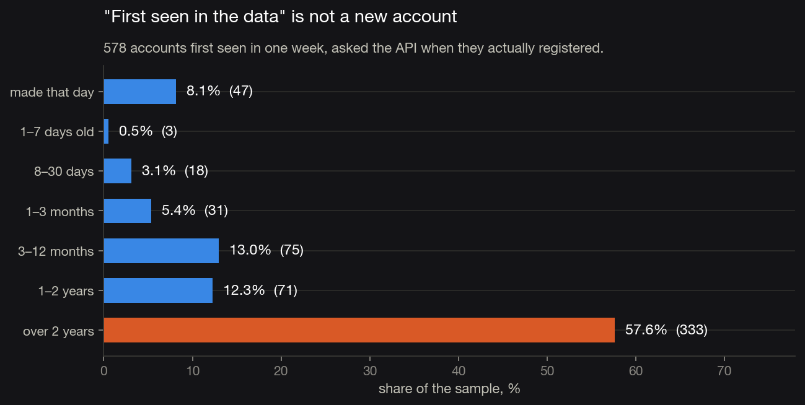
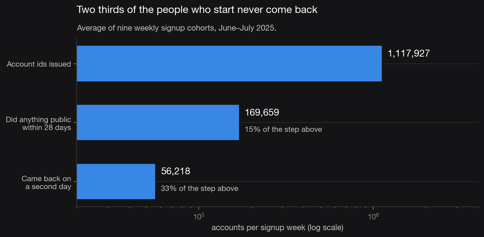
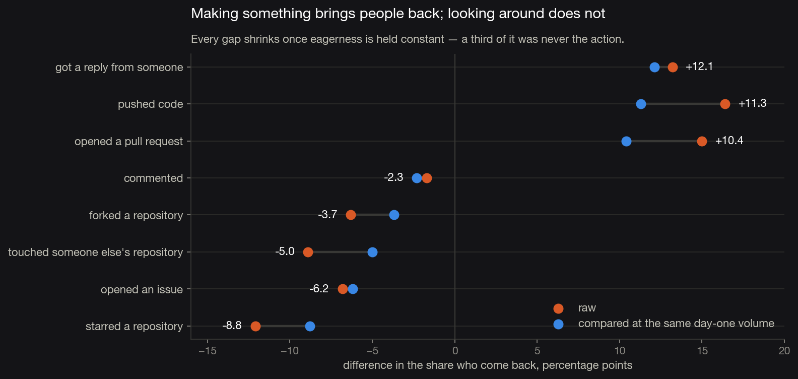
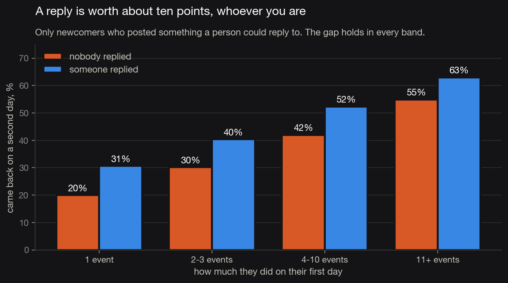

Activation · GitHub signups
Of the ones who do anything at all, a third. What separates them is not how eager they were — it is whether they made something, and whether a human answered them.
GH Archive records events, not signups — there is no registration date in it anywhere. The obvious substitute is "the first time this account appears". Before building on that, I took 600 accounts that first appeared in one week and asked the API when each was actually created.
The median had held the account for 1,040 days. Only 8% were made that day. "First seen" finds dormant accounts waking up — and nothing downstream would have looked wrong.

What works instead: GitHub issues account ids in registration order. Checked on 370 accounts across 2025 — sorted by id, zero registration dates went backwards. So a week of signups is a range of ids, and each boundary can be found by binary search against the API rather than guessed. Then verified: 12 accounts either side of all nine boundaries, 216 of 216 on the correct side.
One clock for everyone: days since the Monday their account was made. Automation is stripped out first using the rules from the data-quality case study — new accounts are exactly where the push farms live.
Two definitions worth stating. 28 days, not 30: returns bump on days 7, 14, 21 and 28, because people come back on the weekday they arrived, so a window that is not whole weeks gives cohorts different numbers of weekends. And a second day, not a second event: half of all newcomers fire several events within minutes of their first, which is one sitting, not a return.

Eager newcomers do more of everything and come back more often, so a raw comparison makes every feature look helpful. Each one is therefore run twice: raw, and again inside bands of how much the account did on its first day.
Day-one volume alone is strong and monotone — 25.9% come back after one event, 56.7% after eleven or more. Once that is held constant, about a third of every gap disappears. What is left still points one way.

Getting a reply barely shrinks under matching (+13.2 raw, +12.1 matched), which makes sense: how many events you fire is yours to control, whether a stranger answers you is not.
Tested only among the 80,152 newcomers who posted something a person could reply to — comparing against everyone else would mostly compare posters with non-posters. Odds ratio 1.39, Fisher exact p = 1.4 × 10⁻⁷⁷.

How I would test it: randomise newcomers who post on day one and get no reply within a few hours; treatment surfaces the post to a maintainer. About 7,000 qualify per week, and the baseline is 33.3%. The observed gap is 8–10 points, but it is correlational, so plan for less.
| Effect to detect | Per arm | Weeks of newcomers |
|---|---|---|
| +2 points | 8,843 | 2.5 |
| +3 points | 3,956 | 1.1 |
| +5 points | 1,442 | 0.4 |